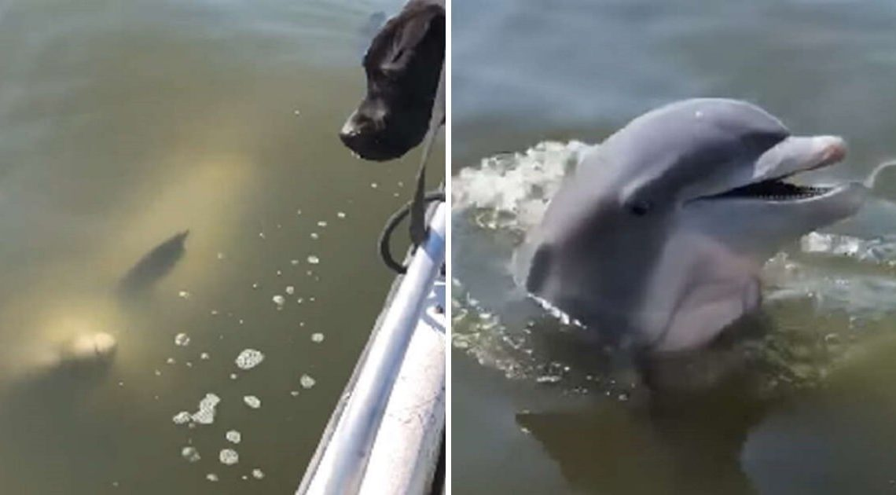

Friendly Dolphin Says Hello To Two Adorable Dogs On A Boat

Nothing is quite as cute and sweet as inter-species friendships. That’s the reason why we would like to show you a video of an adorable dolphin saying “hello” to two friendly dogs. Despite being different species, these cute animals don’t let anything stop them from making friends.
The two adorable pups named Miles and Stanley now live a happy life with their mom, Magen Peigelbeck. One day, they were out enjoying a day of boating in a river near the Isle of Hope Marina on the Georgia coast when a friendly local swung by to greet them and say hello! It was a wild dolphin — and he seemed to want to make the pups’ acquaintance.
Magen Peigelbeck
Although there were many people on the boat, the dolphin only paid attention to Miles and Stanley. He swam toward the dogs and kept popping up out of the water to get their attention and say hello. The curious dogs have never seen a dolphin before, so when seeing it, they barked for a while.
“I was in awe,” Peigelbeck said. “I knew it was a special moment.”
Magen Peigelbeck
The interaction went on for a short time, but thankfully Peigelbeck managed to capture the sweet moment on camera and shared it on social media. It’s not surprising that the video has gone insanely viral everywhere – from Twitter to Facebook to Instagram.
Here’s video of that cute moment:
The dolphin didn’t seem to care much about Peigelbeck, but fortunately she wasn’t too hurt and even felt happy. “The dolphin was having a great time, there to see the dogs, clearly. [He] had no interest in me!” she said.
Peigelbeck and her dogs have been boating a few times since then, but have yet to meet that dolphin again. “We have been out on the water for years and never experienced something like this.” Peigelbeck said. “Very special.”
Do you love this story? Tell us your thoughts in the comments below! Be sure to share this post with your friends and family members!
H/T: The Dodo